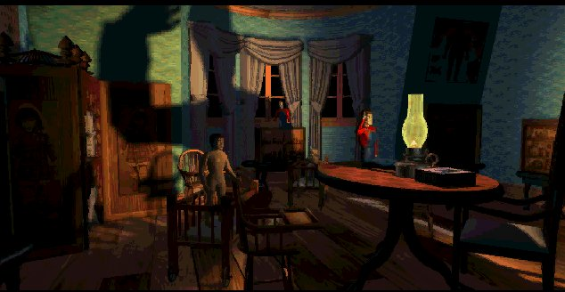

"Never doubt the power of this house!"
This room is dedicated to the creators of the game. I found out that Rob Landeros, Graeme Devine, Robert Stein III and George Sanger are nice people. Talking to a fan, who had nothing to give back. I didn't write for a magazine. Still, they took the time to answer my questions, I don't see that often, so that's why I would like to say thanks to the guys behind the game for creating such a cool game and being nice.
Who is Rob Landeros?

Rob Landeros was the man who was responsible for the concept and the design of both the
7th guest and the 11th hour. He likes to combine different arts in the game, from his point
of view, a company must contain writers, graphic artists and programmers. They each do what
there best at, when a writer starts designing graphics, there's trouble. He likes to work
with artist who are good with conventional media. "I would never hire someone who couldn't show
me a map which shows that he or she can draw."
Before and after...
1988 Rob used to work at Virgin at Research and Development. He had to look at McDonald games. Rob: What am I doing here? Rob left Trilobyte after 'Clandestiny', he formed a company with David Wheeler who directed the movie scenes in the 11th hour and Clandestiny. The company is called Aftermath, a link can be found in the Chapel. Aftermath has made two gamea so far, Tender Loving Care and Point of view. You can read an interview with Rob in the room of Hamilton Temple in my 11th hour site (linked in the chapel).
Who is Graeme Devine?

Graeme was the main programmer and developed the concept in the seventh guest together with
Rob, they started the company Trilobyte. He created 'Groovie' a program which the 11th hour
uses to compress moviefiles.
Before and after...
Graeme Devine worked at Virgin as well, he met Rob there. They didn't have the space to show creativity. Graeme: 'Boring.' With the seventh guest plan they got backup from Virgin to start a company, Trilobyte.
After Rob left Graeme became president of Trilobyte until the end, in '99 the final curtain
fell. Now he's working at Id Software, he worked on Quake Arena and is now working on Doom 3.
You can read my interview with him in the room of Hamilton Temple in my 11th hour site (linked in the chapel).
Who is Matthew Costello?
He wrote the script for both the seventh guest and the 11th hour. The script of the seventh
guest was made into a book that he wrote as well. He has been in the game industry for years as a journalist and writer. He wrote the story of 'Call of Cthulu', an adventure game. You can read an interview with him in Hamiltons room.
Who is Robert Stein III?

He was the main 3d artist on the seventh guest and the 11th hour. He suggested Graeme and Rob to use 3d-graphics.
He has a Stauf t-shirt.
Before and after...
He used to work at Manley & associates as an illustrator, but Greame and Rob asked him to go to Trilobyte. He now has his own company, where he designs for magazines, cd-covers etc. His homepage is linked in the chapel. You can read an interview with him in Hamiltons room.
Who is George Sanger?
George made the music for the two games. He lives on a ranch in Texas. He drives a Rolls.
His artist name is 'the Fat Man'. He has made music for lots of games, He also released audio cd's. If you
want to read an interview with the man, check out Hamiltons room, the link to his official site can be
found in the chapel.
Before and after...
George didn't work at Trilobyte, he was 'hired' to make the music. Before Trilobyte he made music. After Trilobyte he made music. As simple as that.
Of course there were more people who created the game, Greg Goodrich, John Gaffey, James Yokota, Team Fat,
Preston Moser and Scruffy for instance. Helas, I can't talk about all those talented people.
 James Yokota (producer)
James Yokota (producer)
 Greg Goodrich (producer)
Although I would like to add that Scruffy is a cat and slept most of the time.
Greg Goodrich (producer)
Although I would like to add that Scruffy is a cat and slept most of the time.


Some photo's were taken from the Gamespot story by Geoff Keighley (linked in the chapel, photo's: Steve Johnson)